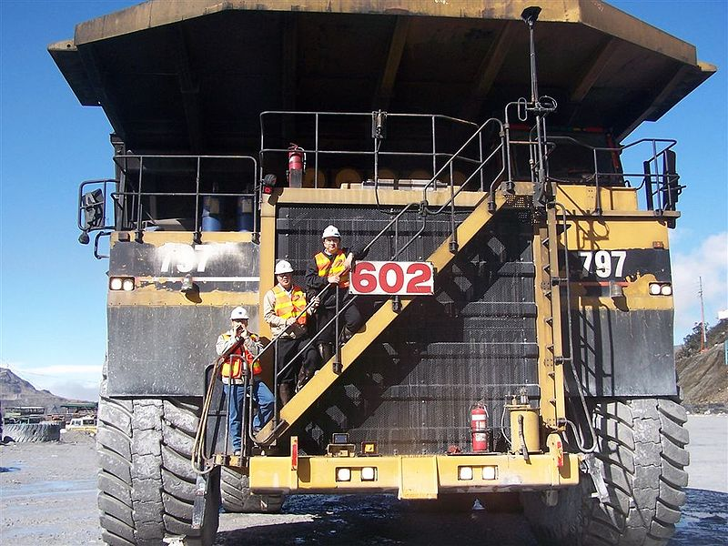
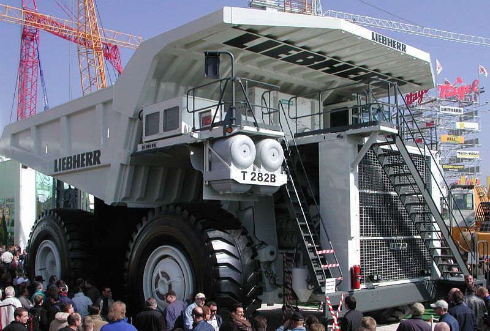
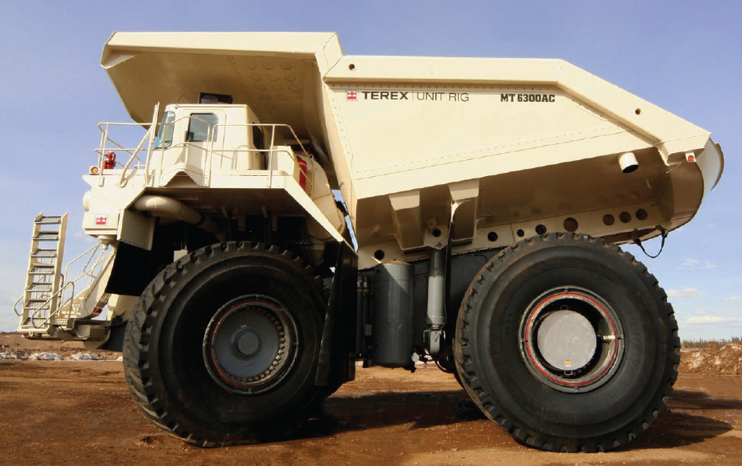

The Largest Vehicles in the world
There are various type vehicles and there are therefore various record holders, so lets summarize that a little.
Largest two-axle
The most known, huge two-axle is the Caterpillar 797:
But it is quite close to the Liebherr T 282B:
And the Bucyrus MT6300AC:
This beasts are haul trucks of 400 short ton capacity, with quite impressive dimension, with no clear winner
| dimension | 797F | T282B | mt6300ac |
|---|---|---|---|
| height | 7.44 m | 7.32 m | 7.92 m |
| width | 9.53 m | 9.09 m | 9.70 m |
| length | 15.09 m | 15.32 m | 15.57m |
| weight¹ | 623700 kg | 596900 kg | 603300 kg |
¹: this is Gross Machine Operating Weight
Depending of the criteria you use, you can give the prize to the 797F aor the MT6300AC, knowing the T292B is always close.
Largest mobile artillery weapon
The Gustav Gun, is the name used for the two German 80cm railway guns. You read that right, 80cm, is the caliber, the diameter of the ammunition if you prefer. They were named Schwerer Gustav and Dora, here is a picture of a model version of Dora:
This were developed in the late 30’s and were 47.3 meter long and weigthed 1490 short tons (to stay in the same measures as previously used in this article).
The Schwerer Gustav Wikipedia page contains more information, and nice pictures for scale, of the gun itself, and its ammunition.
Largest construction vehicle
The Terex RH400 is caterpillar track vehicle that is apparently a bigger than our two axle beasts we saw before, you can see it filling a 797B:

You can have a look at its specifications by yourself, but here is a little summary:
- height: 10.17 m
- width: 8.6m and that’s the tracks, the body is even larger
- shovel can reach 20.2 m up
Largest terrestrial vehicle
This is, by far, the Bagger series, the most known is the Bagger 288:

This behemoth is a bucket-wheel excavator thas weight 13500 tons, its length can go up to 220 m and it goes as high as 96 m for a with of 46 m.
And yes, it is a vehicle and can move up to 0.6km/h, not the fastest, but movies 13500 tons at this speed is already quite amazing. Even with the preparation needed to allow it to move, it was moved in 2001 by 22km, this was told to be less expensive than tear it apart and rebuild on the second location.
Bagger 288 is one of a group of similar sized and built vehicles, such as Bagger 281 (built in 1958), Bagger 285 (1975), Bagger 287 (1976), Bagger 293 (1995).
Largest ship
If the Bagger 288 is the behemoth of man-made vehicles, the Seawise Giant was the leviathan.
This supertanker was 458 m long, just for the references
- for french: Montparnasse tower is 210 m high, Eiffel Tower is 324 m
- for New Yorker: Empire State Building is 443 m, One World Trace Center is 541 m
- For Tokyo-Jin: Tokyo Tower is 333m
There are other building taller of course, I just named a few for scale (no banana here).
It was benched in january 2010, nowadays the largest floating ships are the Maersk Triple E class:

It is 400 m long by 59 m wide (some villages are smaller than that...). At this time there are 6 in service and 10 others are in said to be in construction with ever more ordered.
One of its interesting spec, is that it is a lot more efficient than comparable ships, and has an announced carbon footprint 50% smaller than same sized ships.